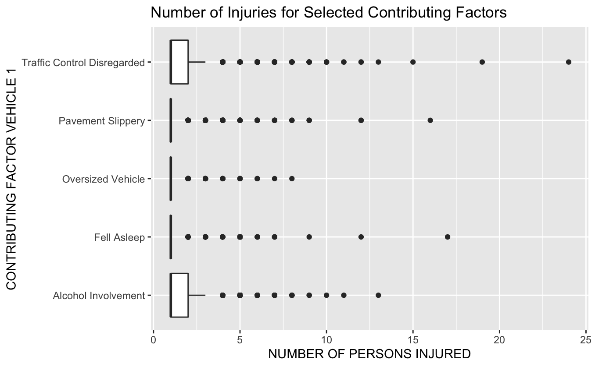
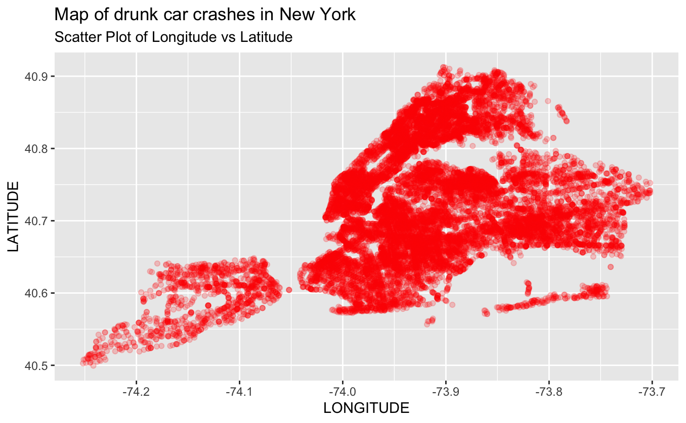

1 Background and Significance
68% of people residing in the United States are licensed drivers and, of these, roughly 88.3% report that they drive daily (Driving-Tests.org 2022). For millions of Americans, driving is how they commute to and from work, travel for vacation or even make their living. Many drivers are concentrated in or near cities because of the high population density and work commutes that come with cities. With higher densities of drivers comes more car accidents with 63.9% of crashes occurring in urban settings (NHTSA 2022). For these reasons, urban settings are great models for studying the causes and outcomes of car accidents in the United States. Since the majority of car accidents involve law enforcement and/or insurance, almost all of them are retained for record keeping purposes.
The city of New York has maintained a dataset of all vehicle incidents involving human injuries or more than $1000 worth of damage since 2012 (New York 2022). This dataset gives a comprehensive view of driving-related incidents and their causes over the past decade. By analyzing this data, we can better understand why, how, when and where car accidents occur in New York City as well as the outcomes of these incidents. By doing these, we can potentially discover vehicle incident trends that can be extended to other urban settings with similar demographics. Further, data from these statistical analyses can be used to influence legislation that could help to mitigate vehicle incidents and, hopefully, reduce loss of life and injury. Furthermore, since this is a rare instance in which we have the entire population, we can verify the validity of certain statistical methods, such as bootstrap analysis, by comparing the statistics generated with the true statistics of a population. Such information would be useful for future research which may rely solely on these methods.
There are several questions that this paper sets out to answer. It is common knowledge that alcohol impairs one’s ability to operate a vehicle, but the authors will seek to show it. Another objective will be to show if there is a particular time of day that accidents are more likely to happen.
2 Methods
2.1 Data Collection
Data was collected by law enforcement in New York City (New York 2022). Every single vehicle incident that involves law enforcement is routinely recorded in this dataset. Note that law enforcement must fill out a report for any incident exceeding $1000 worth of damage or any incident with injury/death. Some incidents that do not meet this criteria are included as well depending on if the responding officers decided to file a report.
2.2 Variable Creation
The raw data as taken from the City of New York is not as useful as it could be for data analysis. A majority of variables were initially stored as character arrays. Base R (R Core Team 2021) makes it easy to convert character arrays to factors using as.factor(). The variables `CRASH_MONTH`, `CRASH_DAY`, and `CRASH_YEAR` were all sliced from the `CRASH DATE` variable provided and then converted to a double. Each of those 3 created variables together form the date when the crash occurred.
The variable `HOUR` is the hour in which the crash occurred, and it is stored as a double. It is not particularly wieldy though, so a logical variable `DAY` was created. It is TRUE for crashes that occurred between 7:00 AM and 7:00 PM and FALSE otherwise.
2.3 Analytic Methods
In this investigation, we make use of the R packages tidyverse, tidymodels, infer, GGally and ggfortify for our analysis. A majority of our knowledge of statistics and coding in R comes from Math 254: Statistical Modeling and Applications Sadigov (2022). Our data analysis consists of classical statistics and simple supervised machine learning. All statistical analysis we perform will be done directly on the population. Before any analyses, though, we first cleaned up the data to make it more user friendly using packages in tidyverse. We also separated out any crashes that happened between 7pm and 7am as night time crashes and any crashes that occurred between 7am and 7pm as day time crashes.
As we had five hypothesis tests, throughout the study we use a significance level of \(\alpha = 0.005/n=0.005/5 = 0.001\)
2.3.1 Finding the street with the highest number of crashes
Initially, we calculated the mode of the categorical variable “ON STREET NAME” in order to determine the street with the highest prevalence of car accidents. Since calculating the mode of a categorical variable is not directly built in to R, we used a function sourced sourced from an external site (Nishida 2019). We use this function to calculate the mode of the variable ‘ON STREET NAME’. Finally, we filter out the number killed on the street that our mode function outputted. The final output is the number of deaths on the street with the most crashes in NY.
2.3.2 Alcohol-Impaired Driving hypothesis testing
For this analysis, we are comparing the death rates of drunk and sober crashes. Before anything, we set a significance level of 0.005. The first step was to separate out all accidents with alcohol involvement. The next step was to select the data by number of persons killed in both drunk driving and non-drunk driving related incidents. Then we calculated the proportion of total incidents leading to a death. The next step is to separate out drunk driving accidents and find the number of drunk driving incidents that result in deaths. Then, we divide this number by the total number of drunk driving incidents to get our proportion. From here, we directly calculated a two sample t-test to get our p-value. (See Results section, subsection Hypothesis Testing). The conditions for this two sample t-test are all met, making it a valid test for these data.
2.3.3 Day/Night Accident Analysis
For our second analysis, we compare the injury rates of New York crashes in the day versus the evening. Before anything, we set a significance level of 0.005. We designate 7am-7pm as ‘Day’ and 7pm-7am as ‘night’ since these are the most common intervals of light and dark respectively throughout the year. The first step was to separate out accidents occurring in the day interval and the night interval. Next, we calculate the proportion of accidents occurring in each of these intervals (accidents in each interval divided by total number of accidents). Our null hypothesis is that there is no discernible difference between the proportion of accidents that cause injury that occur during the day and during the night. The alternative hypothesis is that there is a difference between the proportion of accidents that cause injury that occur during the day and during the night. Next we perform a two-sample t-test and calculate our p-value for analysis.
2.3.4 Simple supervised machine learning
For our final analysis, we perform a simple linear regression on the data. Before anything, we again set a significance level of 0.005. We also created a new variable named “number of persons harmed” which includes both the number of people injured and the number of people killed in an incident. From this, our next step was to use a simple linear regression to determine which day of the month is the most deadly. We took a validation set approach for a simple linear regression for this investigation. Using the tidymodels package, we split our data into two sets, a testing set and a not testing set. From here, we split our not testing set into a training and validation set. We performed the simple linear regression on the training set and, finally, validated it using our validation set. Since our model ended up being poor, we rejected it and did not use it on the testing set.
3 Results
In order to calculate the street with the highest number of accidents, one can simply take the mode of the streets where accidents occur.
clean_street_df <-
clean_df %>%
select(`ON STREET NAME`) %>%
drop_na()
calculate_mode(clean_street_df$`ON STREET NAME`)[1] BROADWAY
12654 Levels: 1 278 ROBERT F KENNEDY BRIDGE N/ ... ZWICKY AVENUEThus, the single street with the most accidents is Broadway.
num_people_killed_on_most_dangerous_street <-
clean_df %>%
filter(`ON STREET NAME` == "BROADWAY") %>%
select(`ON STREET NAME`,
`NUMBER OF PERSONS INJURED`,
`NUMBER OF PERSONS KILLED`) %>%
drop_na() %>%
summarise(number_killed = sum(`NUMBER OF PERSONS KILLED`))
num_people_killed_on_most_dangerous_street[[1]][1] 35# Thus, 35 people have been killed by vehicles on Broadway since 2013
num_people_dangerous_on_most_dangerous_street <-
clean_df %>%
filter(`ON STREET NAME` == "BROADWAY") %>%
select(`ON STREET NAME`,
`NUMBER OF PERSONS INJURED`,
`NUMBER OF PERSONS KILLED`) %>%
drop_na() %>%
summarise(number_injured = sum(`NUMBER OF PERSONS INJURED`))
num_people_dangerous_on_most_dangerous_street[[1]][1] 5890# Thus, 5890 people have been injured by vehicles on Broadway since 20133.1 Hypothesis Test for Death Rate in Alcohol-Involved Crashes
\(H_0\): There is no difference in the proportion of alcohol involved car crashes that kill people than for no alcohol
\(H_a\): There is a difference in the proportion of alcohol involved car crashes that kill people than for no alcohol
Significance level \(\alpha = 0.001\)
[1] 0The code is included in the Appendix. Since the p value calculated is rounded to 0 by the computer and that is below our significance level, we reject the null hypothesis that drunk driving is no more dangerous than sober driving.
3.2 Hypothesis Test for Number of Injuries At Night or During Day
Test if injuries happen at a higher rate during the evening than at night
\(H_0\): The proportion of crashes with injuries is the same during the day as at night (\(p_{inj,day}=p_{inj,night}\))
\(H_a\): The proportion of crashes with injuries at night is higher than the proportion of crashes with injuries during the day (\(p_{inj,night}> p_{inj,day}\))
Significance Level: \(\alpha = 0.001\).
[1] 0The code used is included in the Appendix. The computer rounds the p-value to 0. As the p-value calculated is less than the significance level, \(p < \alpha\), we can safely reject the null hypothesis that car crashes are equally dangerous during the day as at night.
3.3 Linear Regression for Most Harmful Day of the Month
# A tibble: 1 × 3
rmse rsq mae
<dbl> <dbl> <dbl>
1 0.688 0.00000457 0.461The regression has a poor relationship, thus indicating that our model does not fit the data. We are unable to predict a significant relationship between time during the month and the number of vehicular accidents that occur.
3.4 Notable Plots

This illustration is a good visual representation of which factors most commonly cause injuries in vehicle incidents. It is also a good rationale for examining alcohol involvement since alcohol clearly contributes a good amount to the total injury count.

This plot shows the spatial distribution of drunk driving incidents in New York. This plot shows that there drunk driving incidents are roughly uniform, and shows that it may not be necessary to perform any data analysis on the geographical distribution of drunk driving related incidents.
4 Discussion/Conclusions
From our analysis of drunk driving incidents, it is clear that a higher proportion of accidents with alcohol involved lead to deaths (\(p=0\), the computer was unable to calculate a value so small so it rounded to 0). Thus, it may be beneficial for local authorities to prosecute drunk drivers more harshly than current laws do. This presumably would disincentivise drivers from driving under the influence and, thus, lower drunk crashing/death rates. Although we did not perform any formal analysis on incident locations of drunk driving, we did generate a map of all drunk driving incidents in the city. There are no notable locations with high clusters of drunk driving, so further research may be able to elucidate the highest risk regions for drunk crashes and increase police activity in these areas. We also performed a hypothesis test on car accidents that occurred in either daytime (7 AM - 7 PM) or the evening (7 PM - 7 AM). We found that crashes in the evening are significantly more likely to cause injuries than those during the day (\(p=0\), the computer was unable to calculate a value so small so it rounded to 0). This result makes sense since driving conditions in the evening tend to be more difficult than those during the day. Further, this result could potentially inform drivers to avoid driving in the evening, if possible, or exercise more caution when on evening roads. Lastly, from our simple linear regression, we attempted to generate a model that represents the day of the month with the most people harmed. Our model was poor with an \(R^2=4.6\cdot10^{-6}\), so we cannot derive any useful information from. Future models with more advanced methods could possibly explain this better. Such a model could help safety officials target dangerous times of the month and increase traffic enforcement.
Though the data from this study reflects only the population of New York City, the conclusions drawn here can be extended to other settings, particularly urban ones. Our hope is that our conclusions will impact future legislation and other measures aimed at targeting the most common causes of severe vehicle accidents. Though not all incidents can be prevented, laws and regulations targeted towards high-risk accident factors such as drunk driving may lessen the severity of inevitable incidents and prepare authorities for response. That being said, there are still opportunities for future research since the causes of accidents are almost innumerable and many are not studied in this investigation. Finally, more advanced methods could improve the accuracy of our model further and make it effective.
5 Appendix
5.1 General Code
# Libraries
library(tidyverse)
library(infer)
library(tidymodels)
# Load raw data from .csv
data <- read_csv("Motor_Vehicle_Collisions_Crashes.csv")
# Clean data
df <- data %>%
mutate_if(is.character, factor)
# Organize and create additional variables
clean_df <-
df %>%
select(-LOCATION) %>%
mutate(CRASH_MONTH = as.double(substr(`CRASH DATE`, 1, 2))) %>%
mutate(CRASH_DAY = as.double(substr(`CRASH DATE`, 4, 5))) %>%
mutate(CRASH_YEAR = as.double(substr(`CRASH DATE`, 7, 10))) %>%
mutate(HOUR = as.double(substr(data$`CRASH TIME`, 1, 2))) %>%
mutate(DAY = if_else((HOUR < 19 & HOUR >= 7), TRUE, FALSE))Source for the function for mode of categorical variable: (Nishida (2019))
calculate_mode <- function(x) {
uniqx <- unique(na.omit(x))
uniqx[which.max(tabulate(match(x, uniqx)))]
}5.2 Hypothesis Test for Death Rate in Alcohol-Involved Crashes
alcohol_involved_df <-
clean_df %>%
filter(`CONTRIBUTING FACTOR VEHICLE 1` == "Alcohol Involvement" |
`CONTRIBUTING FACTOR VEHICLE 2` == "Alcohol Involvement") %>%
select(`NUMBER OF PERSONS KILLED`) %>%
drop_na()
n_alc <- count(alcohol_involved_df)
all_data <-
clean_df %>%
select(`NUMBER OF PERSONS KILLED`) %>%
drop_na()
n <- count(all_data)
n_killed_alc <-
alcohol_involved_df %>%
summarise(sum(`NUMBER OF PERSONS KILLED`))
p_hat <-
n_killed_alc / n_alc # the number of people killed per car crash where alcohol was involved
n_killed <-
all_data %>%
summarise(sum(`NUMBER OF PERSONS KILLED`))
p0 <-
n_killed / n
sigma <- sqrt(p0 * (1 - p0) / n )
z <- pull((p_hat - p0) / sigma)
p_val <- pnorm(z, lower.tail = FALSE)
p_val5.3 Hypothesis Test for Number of Injuries At Night or During Day
day_df <-
clean_df %>%
filter(DAY == TRUE) %>%
select(`NUMBER OF PERSONS INJURED`) %>%
drop_na()
n_day <- count(day_df)[[1]]
day_inj <-
day_df %>%
filter(`NUMBER OF PERSONS INJURED` != 0) %>%
count()
day_inj <- day_inj[[1]]
p_inj_day <- day_inj / n_day
# the proportion of crashes during the day that have injuries
night_df <-
clean_df %>%
filter(DAY == FALSE) %>%
select(`NUMBER OF PERSONS INJURED`) %>%
drop_na()
n_night <- count(night_df)[[1]]
night_inj <-
night_df %>%
filter(`NUMBER OF PERSONS INJURED` != 0) %>%
count()
night_inj <- night_inj[[1]]
p_inj_night <- night_inj / n_night
# the proportion of crashes during the night that have injuries
n_overall <- count(clean_df)[[1]]
overall_inj <-
clean_df %>%
filter(`NUMBER OF PERSONS INJURED` != 0) %>%
select(`NUMBER OF PERSONS INJURED`) %>%
drop_na() %>%
count()
overall_inj <- overall_inj[[1]]
p_overall <- overall_inj / n_overall
# the overall proportion of crashes that have injuries
test_stat <-
(p_inj_day - p_inj_night) / sqrt(p_overall * (1- p_overall) * (1/n_day + 1/n_night))
pnorm(test_stat) # the p-value associated with our hypothesis test5.4 Linear Regression for Most Harmful Day of the Month
# Function writted by Tural Sadigov
validation_performance <- function(model){
model_results <-
df_validation %>%
bind_cols(predict(model, df_validation)) %>%
select(NUMBER_OF_PERSONS_HARMED, .pred)
my_metrics <- metric_set(rmse, rsq, mae)
output <-
model_results %>%
my_metrics(NUMBER_OF_PERSONS_HARMED, .pred) %>%
select(-.estimator) %>%
pivot_wider(names_from = .metric, values_from = .estimate)
return(output)
}5.5 Generate Figure 1
data %>%
# Select any 5 levels of CONTRIBUTING FACTOR VEHICLE 1
filter(`CONTRIBUTING FACTOR VEHICLE 1` == "Pavement Slippery" |
`CONTRIBUTING FACTOR VEHICLE 1` == "Oversized Vehicle" |
`CONTRIBUTING FACTOR VEHICLE 1` == "Alcohol Involvement" |
`CONTRIBUTING FACTOR VEHICLE 1` == "Traffic Control Disregarded" |
`CONTRIBUTING FACTOR VEHICLE 1` == "Fell Asleep") %>%
filter(`NUMBER OF PERSONS INJURED` != 0) %>% # Remove data where no one was injured
# Generate plot
ggplot(aes (x = `NUMBER OF PERSONS INJURED`,
y = `CONTRIBUTING FACTOR VEHICLE 1`)) +
geom_boxplot() +
ggtitle("Number of Injuries for Selected Contributing Factors")5.6 Generate Figure 2
# Filter data so that only Alcohol Involvement remains
drunk_driver <-
data %>%
filter(`CONTRIBUTING FACTOR VEHICLE 1` == "Alcohol Involvement")
drunk_driver %>%
select(LONGITUDE, LATITUDE) %>% # Select variables to plot
drop_na() %>% # Remove null entries
filter(LONGITUDE < -10 & LONGITUDE > -150 & LATITUDE < 41) %>% # Remove outliers
ggplot(aes(x = LONGITUDE, y = LATITUDE)) + # Generate Plot
geom_point(color = "red", alpha = 0.2) +
ggtitle("Map of drunk car crashes in New York",
subtitle = "Scatter Plot of Longitude vs Latitude")